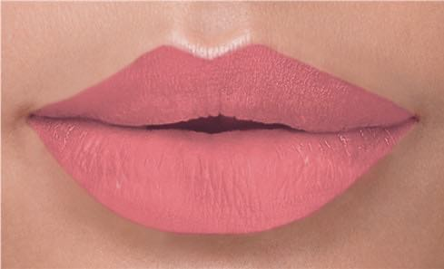

Batom Matte

O queridinho batom matte possui textura mais seca e
pigmentada do que os cremosos – a versão líquida costuma
ser ainda mais sequinha! O acabamento opaco é o responsável
por garantir sofisticação aos lábios. Um dos seus benefícios
é a longa duração, o que significa menos retoques ao longo do
dia. O Batom Líquido Matte da Avon fica confortável nos lábios
e hidrata, não necessitando de um hidratante labial antes da aplicação.